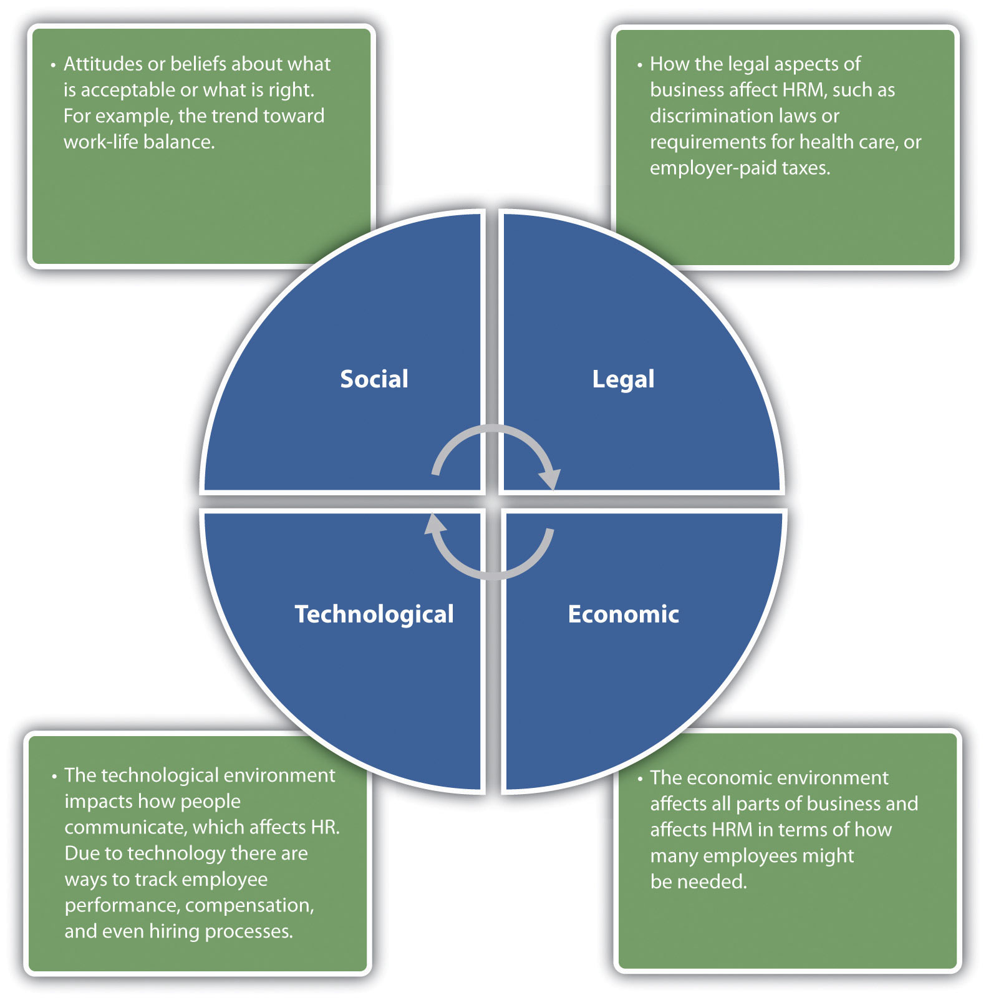
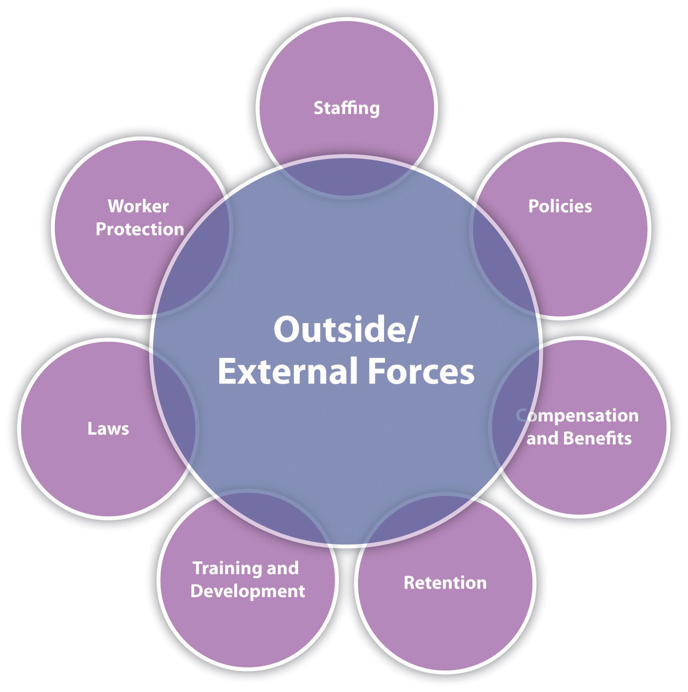

Every organization, large or small, uses a variety of capitalCapital includes cash, valuables, or goods used to generate income for a business. to make the business work. Capital includes cash, valuables, or goods used to generate income for a business. For example, a retail store uses registers and inventory, while a consulting firm may have proprietary software or buildings. No matter the industry, all companies have one thing in common: they must have people to make their capital work for them. This will be our focus throughout the text: generation of revenue through the use of people’s skills and abilities.
Human resource management (HRM)The process of employing people, training them, compensating them, developing policies relating to the workplace, and developing strategies to retain employees. is the process of employing people, training them, compensating them, developing policies relating to them, and developing strategies to retain them. As a field, HRM has undergone many changes over the last twenty years, giving it an even more important role in today’s organizations. In the past, HRM meant processing payroll, sending birthday gifts to employees, arranging company outings, and making sure forms were filled out correctly—in other words, more of an administrative role rather than a strategic role crucial to the success of the organization. Jack Welch, former CEO of General Electric and management guru, sums up the new role of HRM: “Get out of the parties and birthdays and enrollment forms.… Remember, HR is important in good times, HR is defined in hard times.”Kristen B. Frasch, David Shadovitz, and Jared Shelly, “There’s No Whining in HR,” Human Resource Executive Online, June 30, 2009, accessed September 24, 2010, http://www.hreonline.com/HRE/story.jsp?storyId=227738167.
It’s necessary to point out here, at the very beginning of this text, that every manager has some role relating to human resource management. Just because we do not have the title of HR manager doesn’t mean we won’t perform all or at least some of the HRM tasks. For example, most managers deal with compensation, motivation, and retention of employees—making these aspects not only part of HRM but also part of management. As a result, this book is equally important to someone who wants to be an HR manager and to someone who will manage a business.
Have you ever had to work with a human resource department at your job? What was the interaction like? What was the department’s role in that specific organization?
Keep in mind that many functions of HRM are also tasks other department managers perform, which is what makes this information important, despite the career path taken. Most experts agree on seven main roles that HRM plays in organizations. These are described in the following sections.
You need people to perform tasks and get work done in the organization. Even with the most sophisticated machines, humans are still needed. Because of this, one of the major tasks in HRM is staffing. StaffingThe entire hiring process from the first step of posting a job to the actual hiring of an employee. involves the entire hiring process from posting a job to negotiating a salary package. Within the staffing function, there are four main steps:
Every organization has policies to ensure fairness and continuity within the organization. One of the jobs of HRM is to develop the verbiage surrounding these policies. In the development of policies, HRM, management, and executives are involved in the process. For example, the HRM professional will likely recognize the need for a policy or a change of policy, seek opinions on the policy, write the policy, and then communicate that policy to employees. It is key to note here that HR departments do not and cannot work alone. Everything they do needs to involve all other departments in the organization. Some examples of workplace policies might be the following:
These topics are addressed further in Chapter 6 "Compensation and Benefits", Chapter 7 "Retention and Motivation", Chapter 8 "Training and Development", and Chapter 9 "Successful Employee Communication".
HRM professionals need to determine that compensation is fair, meets industry standards, and is high enough to entice people to work for the organization. CompensationAnything the employee receives for his or her work. It can include pay, benefits, vacation time, and sick leave. includes anything the employee receives for his or her work. In addition, HRM professionals need to make sure the pay is comparable to what other people performing similar jobs are being paid. This involves setting up pay systems that take into consideration the number of years with the organization, years of experience, education, and similar aspects. Examples of employee compensation include the following:
Since this is not an exhaustive list, compensation is discussed further in Chapter 6 "Compensation and Benefits".
RetentionThe process and strategies of keeping and motivating employees to stay with the organization. involves keeping and motivating employees to stay with the organization. Compensation is a major factor in employee retention, but there are other factors as well. Ninety percent of employees leave a company for the following reasons:
Despite this, 90 percent of managers think employees leave as a result of pay.Leigh Rivenbark, “The 7 Hidden Reasons Why Employees Leave,” HR Magazine, May 2005, accessed October 10, 2010, http://findarticles.com/p/articles/mi_m3495/is_5_50/ai_n13721406. As a result, managers often try to change their compensation packages to keep people from leaving, when compensation isn’t the reason they are leaving at all. Chapter 7 "Retention and Motivation" and Chapter 11 "Employee Assessment" discuss some strategies to retain the best employees based on these four factors.
Once we have spent the time to hire new employees, we want to make sure they not only are trained to do the job but also continue to grow and develop new skills in their job. This results in higher productivity for the organization. Training is also a key component in employee motivation. Employees who feel they are developing their skills tend to be happier in their jobs, which results in increased employee retention. Examples of training programs might include the following:
We address each of these types of training and more in detail in Chapter 8 "Training and Development".
Human resource people must be aware of all the laws that affect the workplace. An HRM professional might work with some of these laws:
The legal environment of HRM is always changing, so HRM must always be aware of changes taking place and then communicate those changes to the entire management organization. Rather than presenting a chapter focused on HRM laws, we will address these laws in each relevant chapter.
Safety is a major consideration in all organizations. Oftentimes new laws are created with the goal of setting federal or state standards to ensure worker safety. Unions and union contracts can also impact the requirements for worker safety in a workplace. It is up to the human resource manager to be aware of worker protection requirements and ensure the workplace is meeting both federal and union standards. Worker protection issues might include the following:
We take a closer look at these issues in Chapter 12 "Working with Labor Unions" and Chapter 13 "Safety and Health at Work".
Besides these major roles, good communication skills and excellent management skills are key to successful human resource management as well as general management. We discuss these issues in Chapter 9 "Successful Employee Communication".
In addition to managing internal factors, the HR manager needs to consider the outside forces at play that may affect the organization. Outside forces, or external factorsAnything the company has no direct control over; it could positively or negatively impact human resources., are those things the company has no direct control over; however, they may be things that could positively or negatively impact human resources. External factors might include the following:
For example, the recent trend in flexible work schedulesA policy that allows employees to set their own schedules to work around family and personal needs. (allowing employees to set their own schedules) and telecommutingAllows employees to work from home or a remote location for a specified period of time, such as one day per week. (allowing employees to work from home or a remote location for a specified period of time, such as one day per week) are external factors that have affected HR. HRM has to be aware of these outside issues, so they can develop policies that meet not only the needs of the company but also the needs of the individuals. Another example is the Patient Protection and Affordable Care Act, signed into law in 2010. Compliance with this bill has huge implications for HR. For example, a company with more than fifty employees must provide health-care coverage or pay a penalty. Currently, it is estimated that 60 percent of employers offer health-care insurance to their employees.Peter Cappelli, “HR Implications of Healthcare Reform,” Human Resource Executive Online, March 29, 2010, accessed August 18, 2011, http://www.hreonline.com/HRE/story.jsp?storyId=379096509. Because health-care insurance will be mandatory, cost concerns as well as using health benefits as a recruitment strategy are big external challenges. Any manager operating without considering outside forces will likely alienate employees, resulting in unmotivated, unhappy workers. Not understanding the external factors can also mean breaking the law, which has a concerning set of implications as well.
Figure 1.2
An understanding of key external factors is important to the successful HR professional. This allows him or her to be able to make strategic decisions based on changes in the external environment. To develop this understanding, reading various publications is necessary.
One way managers can be aware of the outside forces is to attend conferences and read various articles on the web. For example, the website of the Society for Human Resource Management, SHRM Online,Society for Human Resource Management, accessed August 18, 2011, http://www.shrm.org/Pages/default.aspx. not only has job postings in the field but discusses many contemporary human resource issues that may help the manager make better decisions when it comes to people management. In Section 1.3 "Today’s HRM Challenges", we go into more depth about some recent external issues that are affecting human resource management roles. In Section 1.1.2 "The Role of HRM", we discuss some of the skills needed to be successful in HRM.
Figure 1.3
Most professionals agree that there are seven main tasks HRM professionals perform. All these need to be considered in relation to external and outside forces.